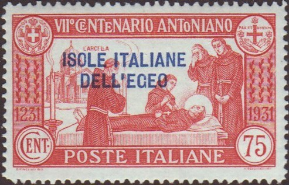
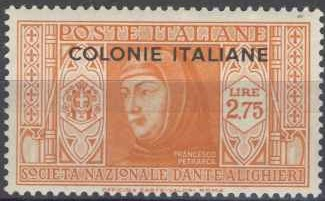
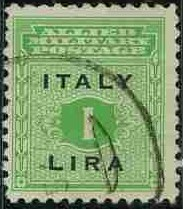

With 'ERITREA' overprint and changed color
Return To Catalogue - Italy overview - 1900-1929 issues - King Victor Emanuel III issues - Imperial issue of 1929
Note: on my website many of the
pictures can not be seen! They are of course present in the
catalogue;
contact me if you want to purchase the catalogue.
20 c red 50 c + 10 c brown 1.25 L + 25 c blue
These stamps exist in different colours with overprint 'ERITREA' for use in Eritrea, with overprint 'CIRENAICA', TRIPOLITANIA' and 'SOMALIA ITALIANA'.
With 'ERITREA' overprint and changed color
20 c red 25 c green 50 c violet 1.25 L blue 5 L + 2 L orange Airmail (Ferruci with falcon on his hand) 50 c violet 1 L brown 5 L + 2 L lilac
These stamps (except airmail) exist in different colours with overprint 'ERITREA' for use in Eritrea and 'SOMALIA ITALIANA'. Also with overprint 'Cirenaica' for Cyrenaica. The airmail stamps exist with overprint 'ISOLE ITALIANE DELL'EGEO' (Aegean Islands).

They also exist (partly in changed colours) with the overprint 'CALCHI', 'CALINO', 'CASO', 'CASTELROSSO', 'COO', 'LERO', 'LISSO', 'NISIRO', 'PALMO', 'PISCOPI', 'RODI', SCARPANTO', 'SIMI' and 'STAMPALIA'. These issues were issued for stamp collectors and were not available on these islands!
A stamp with overprint 'TRIPOLITANIA'

15 c brown 20 c orange 25 c green 30 c lilac 50 c violet 75 c red 1.25 L blue 5 L + 1.50 L brown 10 L + 2.50 L green Airmail (all identical design, man with eagle) 50 c brown 1 L orange 7.70 L + 1.30 L brown 9 L + 2 L blue
These stamps (except airmail) exist in different colours with overprint 'ERITREA' for use in Eritrea and 'SOMALIA'. Also with overprint 'CIRENAICA' for Cyrenaica or with overprint 'TRIPOLITANIA'. All values (inclusive airmail) in different colours exist with overprint 'ISOLE ITALIANE DELL'EGEO' (Aegean Islands).
Stamps with overprint 'TRIPOLITANIA'
20 c lilac 25 c green 30 c brown 50 c violet 75 c red 1.25 L blue 5 L + 2.50 L brown
Stamp of Italy of 1931, overprinted 'Cirenaica' to be used in Cyrenaica.

with overprint 'ISOLE ITALIANE DELL'EGEO' (Aegean
Islands) and 'TRIPOLITANA' (Tripolitania)
These stamps exist in partly different colours with overprint 'ERITREA' for use in Eritrea, 'SOMALIA', 'Cirenaica', 'CIRENAICA', 'Tripolitania' and 'TRIPOLITANIA'. All values exist with overprint 'ISOLE ITALIANE DELL'EGEO' (Aegean Islands).
20 c red 50 c violet 1.25 L blue
10 c brown (Boccacio) 15 c green (Machiavelli) 20 c red (Sarpi) 25 c green (Alfieri) 30 c brown (Foscolo) 50 c violet (Leopardi) 75 c red (Carducci) 1.25 L blue (Botta) 1.75 L orange (Torquato Tasso) 2.75 L grey (Petrarca) 5 L + 2 L red (Ariosto) 10 L + 2.50 L olive (Dante) Airmail
50 c olive (Da Vinci aeroplane) 1 L violet (Da Vinci) 3 L red (design as 1 L) 5 L green (design as 1 L) 7.70 L + 2 L blue (design as 50 c) 10 L + 2.50 L black (design as 1 L) 100 L blue and olive
All values (inclusive airmail) in partly different colours exist with overprint 'ISOLE ITALIANE DELL EGEO' (Aegean Islands). All values (except 100 L) exist in different colours with overprint 'COLONIE ITALIANE' to be issued for the Italian colonies in Africa. The 100 L airmail stamp was issued with inscription 'POSTE COLONIALE ITALIANE' and in different colours for the Italian colonies in Africa. The 100 L airmail stamp was also issued with inscription 'ISOLE ITALIANE DELL EGEO' for the Aegean Islands.

10 c black 20 c brown 25 c green 30 c orange 50 c violet 75 c red 1.25 L blue 1.75 L + 25 c blue 2.55 L + 50 c brown 5 L + 1 L red Airmail 50 c red (house at Caprera) 80 c green (hut where Garibaldi's wife died) 1 L + 25 c brown (design as 50 c) 2 L + 50 c blue (portrait of Garibaldi's wife) 5 L + 1 L green (portrait of Garibaldi) Airmail express stamps
2.25 L + 1 L red and violet 4.50 L + 1.50 L green and brown
The normal Garibaldi stamps (without airmail) exist in changed colours with overprints: 'CARCHI', 'CALINO', 'CASO', 'CASTELROSSO', 'COO', 'LERO', 'LISSO', 'NISIRO', 'PATMO', 'PISCOPI', 'RODI', 'SCARPANTO', 'SIMI' and 'STAMPALIA' in blue or red. See under Italian occupation of the Aegean Islands for more information. Examples:
The airmail and airmail express stamps exist in different colours with overprint 'ISOLE ITALIANE DELL' EGEO' (Aegean Islands). All values exist in different colours with changed inscription 'POSTE COLONIE ITALIANE' to be issued for the Italian colonies in Africa.
Inscription 'POSTE COLONIE ITALIANE' for the Italian colonies in Africa.
5 c brown 10 c olive 15 c green 20 c red 25 c green 30 c brown 35 c blue 50 c violet 60 c brown 75 c red 1 L black 1.25 L blue 1.75 L orange 2.55 L grey 2.75 L green 5 L + 2.50 L red Airmail
50 c brown 75 c light brown 1.25 L green 2.50 L orange
10 c brown 20 c red 50 c violet 1.25 L blue
20 c red 25 c green 50 c violet 1.25 L blue 2.55 L + 2.50 L black Airmail (dove with St.Peter and Jerusalem building) 50 c + 25 c brown 75 c + 50 c lilac
10 c olive 20 c red (design as 10 c) 50 c violet 1.25 L blue 1.75 L + 1 L black 2.55 L + 1 L violet 2.75 L + 2.50 L green Airmail 25 c green 50 c brown 75 c light brown (design as 25 c) 1 L + 50 c violet (design as 50 c) 2 L + 1.50 L blue 3 L + 2 L black Express airmail (hoisting of Italian flag) 2 L + 1.25 L blue 2.25 L + 1.25 L green 4.50 L + 2 L red
50 c violet 1.25 L blue
20 c brown 25 c green 50 c violet (design as 25 c) 1.25 L blue 5 L + 2.50 L olive Airmail 50 c red 75 c blue 5 L + 2.50 L black 10 L + 5 L black
All stamps exist with overprint 'ISOLE ITALIANE DELL'EGEO' in partly different colours for the Aegean Islands.
Aegean Islands issues
30 c brown 75 c red
10 c olive 15 c green 20 c red 25 c green 30 c brown 50 c violet 75 c red 1.25 L blue 1.75 L + 1 L orange 2.55 L + 2 L lilac 2.75 L + 2 L violet Airmail 25 c green (Zeppelin) 50 c grey 75 c brown (design as 50 c) 80 c grey (design as 25 c) 1 L + 50 c brown 2 L + 1 L blue 3 L + 2 L black Airmail express stamps 2 L + 1.25 L brown 4.50 L + 2 L red-brown
These stamps exist in different colors with overprint 'ISOLE ITALIANE DELL'EGEO'.
20 c red 30 c brown 50 c violet
20 c + 10 c red 25 c + 15 c green 50 c + 30 c violet 1.25 L + 75 c blue Airmail 50 c + 50 c brown (wing above globe)
Arrows 20 c red 30 c olive Man with aeroplanes in background 50 c violet 1.25 L blue
Portrait of Bellini 20 c red 30 c olive 50 c violet 1.25 L blue Piano 1.75 L + 1 L red House 2.75 L + 2 L black Airmail 25 c yellow (winged angel with harp) 50 c brown (design as 25 c) 60 c red (design as 25 c) 1 L + 1 L violet (angels playing violin) 5 L + 2 L green (houses with mountains in background)
20 c red 30 c black 50 c violet (design as 30 c) 1.25 L blue (design as 20 c) Airmail 25 c green (earoplane) 50 c brown (earoplane above landscape) 60 c red (bird with tree) 1 L + 1 L violet (design as 50 c) 5 L + 2 L green (ruins)
10 c green (sheep) 20 c red (blooming tree) 30 c olive 50 c violet 75 c red 1.25 L + 1 L blue (design as 20 c) 1.75 L + 1 L red 2.55 L + 1 L grey Airmail 25 c green 50 c brown 60 c red 1 L + 1 L violet 5 L + 2 L black
10 c olive (Spontini) 20 c red (Stradivari) 25 c green (Leopardi) 30 c olive (Pergolesi) 50 c violet (Leopardi) 75 c red (design as 30 c) 1.25 L blue (Giotto) 1.75 L light brown (design as 10 c) 2.55 L + 2 L green (design as 20 c) 2.75 L + 2 L brown (design as 1.75 L)
20 c red 50 c violet 1.25 L blue
10 c brown (child) 20 c red (child, smaller design) 25 c green (design as 10 c) 30 c olive 50 c violet (design as 20 c) 75 c red (child in circle) 1.25 L blue (design as 20 c) 1.75 L + 75 c orange (design as 30 c) 2.75 L + 1.25 L green (design as 75 c) 5 L + 3 L grey (design as 20 c) Airmail 25 c green (girl with gun) 50 c grey (three children's heads) 1 L violet (design as 25 c) 2 L + 1 L blue (design as 50 c) 3 L + 2 L orange (design as 25 c) 5 L + 3 L brown (design as 50 c)

10 c grey 15 c olive 20 c red 25 c green 30 c olive 50 c violet 75 c red 1.25 L blue 1.75 L + 1 L lilac 2.55 L + 2 L green Airmail 25 c lilac 50 c olive 80 c orange (horses) 1 L + 1 L blue (map) 5 L + 1 L grey (portrait of Augustus)
These stamps exist in different colors with overprint 'ISOLE ITALIANE DELL'EGEO':
10 c brown (753 bc) 20 c red (30 bc) 25 c green (1265 1321) 30 c olive (Columbus, 1492) 50 c violet (Da Vinci, 1452 1519) 75 c red (1821 1840) 1.25 L blue (1915 1918) 1.75 L black (1922) 2.75 L green (1936) 5 L brown (King Victor Emanuel, 1911, 1918, 1936) Airmail
25 c green (King Victor Emanuel) 50 c olive 1 L lilac (design as 50 c) 2 L blue (Da Vinci) 3 L red (design as 25 c) 5 L green (design as 2 L)
20 c red 50 c violet 1.25 L blue
Non-issued stamp?
Hitler and Mussolini with no hats 10 c olive 20 c orange 25 c green Hitler with hat and Mussolini with helmet 50 c violet 75 c red 1.25 L blue

Spy forgery, Hitler looking angry and Mussolini surprised
Man on horse 20 c + 10 c red 30 c + 15 c olive Roman soldier 50 c + 25 c violet 1.25 L + 1.00 L blue
10 c orange and brown 25 c green 50 c lilac and violet 1.25 L green and blue
Statue 25 c green 30 c brown Portrait of Rossini 50 c violet 1 L blue
50 c violet 50 c brown
Some proofs exist in a similar design (also 50 c), but with the wolf replaced by a signature. This design was not used finally. They exists both perforated and imperforate in four different colours violet, blue, grey and red (two slightly different colours on each stamp).

In this design exist: 15 c orange (date of issue 24 August 1943) 25 c olive (date of issue 17 September 1943) 30 c brown (date of issue 17 September 1943) 50 c lilac (date of issue 17 September 1943) 60 c yellow (date of issue 15 October 1943) 1 L green (date of issue 17 September 1943) 2 L red (date of issue 14 October 1943) 5 L blue (date of issue 20 October 1943) 10 L brown (date of issue 20 October 1943)
All stamps have 'ITALY' and 'CENTESIMI', 'LIRA' or 'LIRE' in black. These stamps were declared invalid on 30 September 1944.
20 c red 35 c blue (red overprint) 50 c violet (red overprint)
Stamps - Francobolli - Timbres - Briefmarken - Postzegels
{kind=link}